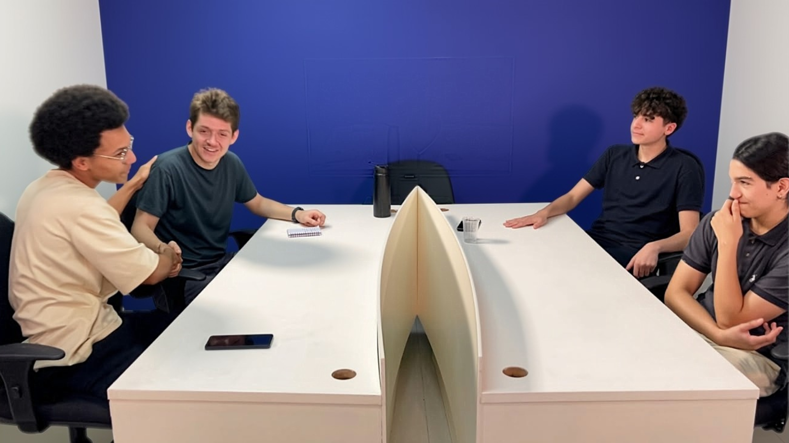

MECANICAST
Podcast para você, amante de automóveis


Sobre o Podcast
O Mecanicast é o seu ponto de encontro definitivo para quem é apaixonado por velocidade, inovação e tudo o que nos faz ir mais longe. Nosso espaço é dedicado a explorar a fundo o universo dos automóveis, os bastidores de alta voltagem do automobilismo e a evolução constante dos mais diversos meios de transporte.
Mais do que apenas falar sobre motores e design, nós propomos um debate inteligente e aprofundado. Aqui, as discussões vão além da pista e chegam aos conselhos administrativos: analisamos o mercado automotivo, as tendências da indústria, as transições tecnológicas (como a acirrada corrida entre os veículos a combustão e os elétricos) e as estratégias globais que moldam o futuro da mobilidade.
Para garantir que nossas análises tenham a máxima precisão, trazemos regularmente convidados de peso e especialistas da área — engenheiros, pilotos, analistas de mercado e profissionais do setor — para sentar à mesa, debater ideias e compartilhar visões exclusivas.
Ajuste os retrovisores, escolha o seu episódio e embarque nessa jornada com a gente. O debate já vai começar!